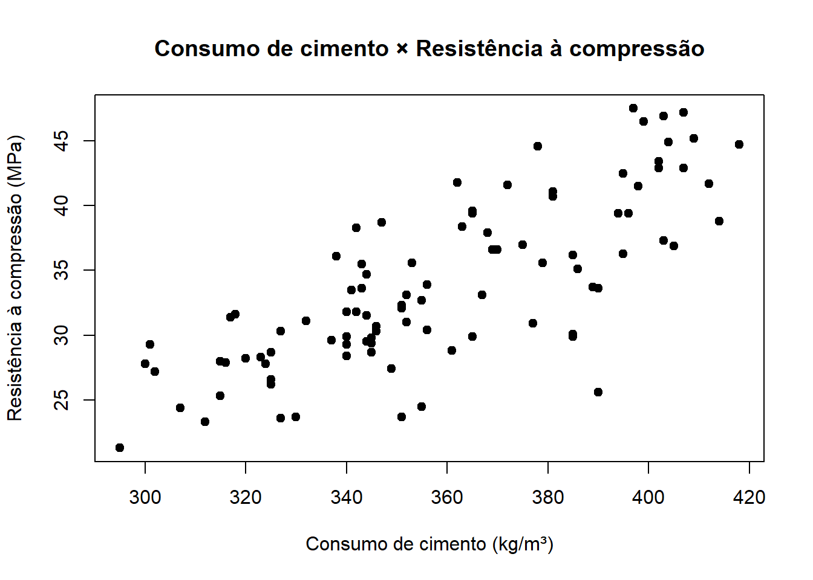
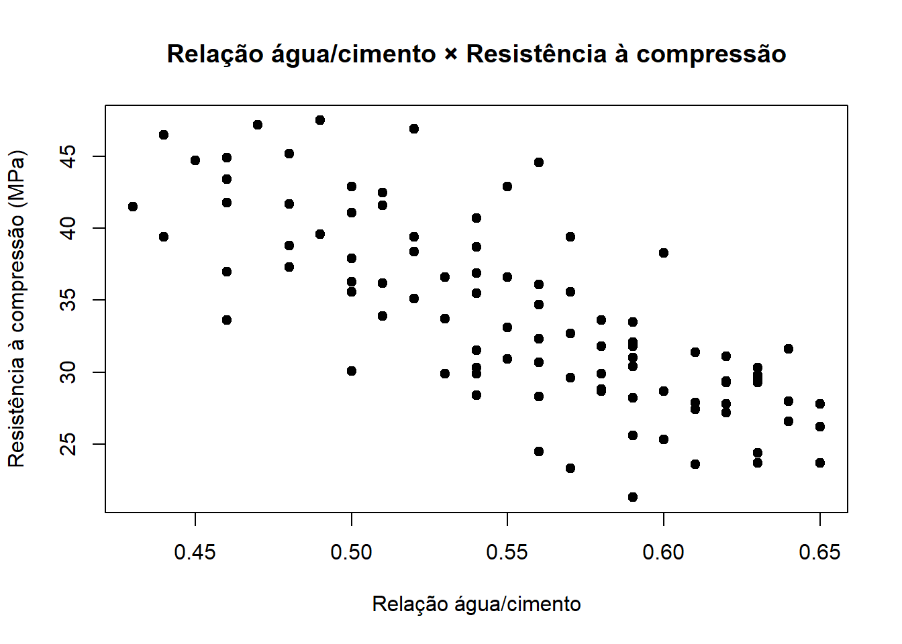
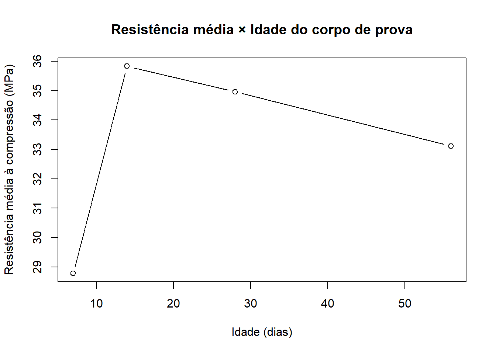

| id_corpo_prova | obra | tipo_concreto | idade_dias | resistencia_mpa | cimento_kg_m3 | relacao_a_c | abatimento_mm | densidade_kg_m3 | absorção_agregado_pct |
|---|---|---|---|---|---|---|---|---|---|
| CP-001 | Bloco A | C35 | 28 | 36.3 | 395 | 0.5 | 111.0 | 2332.0 | 2.3 |
| CP-002 | Bloco A | C30 | 7 | 28.4 | 340 | 0.54 | 114.0 | 2389.0 | 1.85 |
| CP-003 | Bloco C | C30 | 56 | 36.1 | 338 | 0.56 | 106.0 | 2427.0 | 1.89 |
| CP-004 | Bloco A | C40 | 28 | 47.2 | 407 | 0.47 | 142.0 | 2345.0 | 1.97 |
| CP-005 | Bloco B | C25 | 28 | 27.9 | 316 | 0.61 | 133.0 | 2448.0 | 2.31 |
| CP-006 | Bloco B | C40 | 28 | 41.5 | 398 | 0.43 | 98.0 | 2324.0 | 0.8 |
| CP-007 | Bloco C | C25 | 56 | 23.7 | 351 | 0.65 | 99.0 | 2385.0 | 1.18 |
| CP-008 | Bloco D | C30 | 28 | 38,7 | 347 | 0.54 | 116.0 | 2387.0 | 1.33 |
| CP-009 | Bloco B | C30 | 14 | 30.3 | 346 | 0.54 | 125.0 | 2328.0 | 2.92 |
| CP-010 | Bloco A | C25 | 7 | 25.3 | 315 | 0.6 | 127.0 | 2413.0 | 1.94 |
| CP-011 | Bloco C | C30 | 7 | 31.8 | 340 | 0.58 | 95.0 | 2374.0 | 1.01 |
| CP-012 | Bloco A | C40 | 28 | 39.4 | 396 | 0.44 | 114.0 | 2374.0 | 1.96 |
| CP-013 | Bloco B | C35 | 28 | 35.6 | 379 | 0.5 | 123.0 | 2339.0 | 1.79 |
| CP-014 | Bloco B | C35 | 28 | 39.4 | 394 | 0.52 | 121.0 | 2372.0 | 1.19 |
| CP-015 | Bloco B | C35 | 14 | 36.3 | 363 | 0.49 | 2359.0 | 1.93 | |
| CP-016 | Bloco A | C25 | 28 | 28.7 | 325 | 0.6 | 175.0 | 2326.0 | 1.53 |
| CP-017 | Bloco B | C35 | 14 | 38.4 | 363 | 0.52 | 109.0 | 2348.0 | 1.4 |
| CP-018 | Bloco B | C30 | 28 | 34.7 | 344 | 0.56 | 118.0 | 2414.0 | 1.62 |
| CP-019 | Bloco B | C30 | 28 | 3O,4 | 356 | 0.59 | 83.0 | 2360.0 | 0.89 |
| CP-020 | Bloco B | C40 | 14 | 41.7 | 412 | 0.48 | 107.0 | 2378.0 | 1.66 |
| CP-021 | Bloco A | C30 | 28 | 28.8 | 361 | 0.58 | 116.0 | 2451.0 | 1.36 |
| CP-022 | Bloco C | C40 | 28 | 45.2 | 409 | 0.48 | 113.0 | 2360.0 | 1.92 |
| CP-023 | Bloco C | C30 | 28 | 35.5 | 343 | 0.54 | 101.0 | 2363.0 | 1.83 |
| CP-024 | Bloco A | C40 | 28 | 44.7 | 418 | 0.45 | 124.0 | 2363.0 | 1.94 |
| CP-025 | Bloco A | C25 | 28 | 27.2 | 302 | 0.62 | 107.0 | 2381.0 | 2.54 |
| CP-026 | Bloco C | C25 | 7 | 24.4 | 307 | 0.63 | 112.0 | 2364.0 | 1.99 |
| CP-027 | Bloco B | C30 | 28 | 39.4 | 365 | 0.57 | 102.0 | 2413.0 | 2.1 |
| CP-028 | Bloco D | C30 | 28 | 33.6 | 343 | 0.58 | 104.0 | 2324.0 | 2.13 |
| CP-029 | Bloco D | C25 | 7 | 23.7 | 330 | 0.63 | 100.0 | 2347.0 | 2.09 |
| CP-030 | Bloco B | C35 | 56 | 44.6 | 378 | 0.56 | 122.0 | 2386.0 | 1.93 |
| CP-031 | Bloco D | C35 | 28 | 40.7 | 381 | 0.54 | 103.0 | 2387.0 | 1.75 |
| CP-032 | Bloco D | C35 | 14 | 36.6 | 370 | 0.53 | 1250.0 | 2383.0 | 2.13 |
| CP-033 | Bloco C | C30 | 28 | 31.5 | 344 | 0.54 | 132.0 | 2374.0 | 2.06 |
| CP-034 | Bloco C | C30 | 7 | 28.7 | 345 | 0.58 | 110.0 | 2345.0 | 0.91 |
| CP-035 | Bloco B | C35 | 56 | 41.1 | 381 | 0.5 | 103.0 | 2324.0 | 2.03 |
| CP-036 | Bloco C | C30 | 7 | 24.5 | 355 | 0.56 | 93.0 | 2373.0 | 2.39 |
| CP-037 | Bloco B | C30 | 56 | 36.6 | 369 | 0.55 | 118.0 | 2380.0 | 2.41 |
| CP-038 | Bloco C | C25 | 28 | 25.7 | 309 | 146.0 | 2334.0 | 2.12 | |
| CP-039 | Bloco C | C40 | 28 | 44.9 | 404 | 0.46 | 120.0 | 2385.0 | 2.57 |
| CP-040 | Bloco B | C25 | 28 | 29.4 | 345 | 0.62 | 89.0 | 2401.0 | 2.08 |
| CP-041 | Bloco D | C25 | 28 | 31.4 | 317 | 0.61 | 100.0 | 2390.0 | 2.33 |
| CP-042 | Bloco B | C30 | 56 | 32.3 | 351 | 0.56 | 108.0 | 2385.0 | 1.34 |
| CP-043 | Bloco A | C35 | 14 | 33.9 | 356 | 0.51 | 107.0 | 2293.0 | 1.31 |
| CP-044 | Bloco C | C25 | 28 | 23.6 | 327 | 0.61 | 127.0 | 2396.0 | 2.62 |
| CP-045 | Bloco C | C40 | 14 | 42.9 | 407 | 0,55 | 76.0 | 2381.0 | 2.12 |
| CP-046 | Bloco D | C30 | 28 | 31.8 | 342 | 0.59 | 131.0 | 2434.0 | 1.42 |
| CP-047 | Bloco B | C25 | 28 | 26.2 | 325 | 0.65 | 83.0 | 2325.0 | 2.02 |
| CP-048 | Bloco B | C30 | 7 | 32.1 | 351 | 0.59 | 127.0 | 2390.0 | 2.35 |
| CP-049 | Bloco A | C40 | 28 | 38.8 | 414 | 0.48 | 103.0 | 2376.0 | 1.48 |
| CP-050 | Bloco C | C30 | 14 | 32.7 | 355 | 0.57 | 142.0 | 2344.0 | 1.99 |
| CP-051 | Bloco C | C30 | 28 | 33.1 | 352 | 0.55 | 82.0 | 2316.0 | 0.94 |
| CP-052 | Bloco C | C25 | 7 | 31.6 | 318 | 0.64 | 93.0 | 2354.0 | 1.47 |
| CP-053 | Bloco D | C30 | 28 | 27.4 | 349 | 0.61 | 97.0 | 238.0 | 1.79 |
| CP-054 | Bloco A | C40 | 7 | 42.5 | 395 | 0.51 | 71.0 | 2391.0 | 1.11 |
| CP-055 | Bloco D | C25 | 28 | 28.2 | 320 | 0.59 | 143.0 | 2405.0 | 1.8 |
| CP-056 | Bloco B | C35 | 28 | 37.9 | 368 | 0.5 | 108.0 | 2376.0 | 2.31 |
| CP-057 | Bloco B | C30 | 56 | 33.5 | 341 | 0.59 | 85.0 | 2402.0 | 1.02 |
| CP-058 | Bloco D | C35 | 14 | 33.7 | 389 | 0.53 | 70.0 | 2387.0 | 1.76 |
| CP-059 | Bloco B | c30 | 7 | 29.9 | 340 | 0.58 | 95.0 | 2388.0 | 1.1 |
| CP-060 | Bloco A | C25 | 28 | 29.3 | 340 | 0.63 | 100.0 | 2363.0 | 1.83 |
| CP-061 | Bloco C | C25 | 28 | 29.3 | 301 | 0.62 | 103.0 | 2357.0 | 2.1 |
| CP-062 | Bloco A | C25 | 28 | 29.5 | 344 | 0.63 | 97.0 | 2350.0 | 2.01 |
| CP-063 | Bloco B | C35 | 28 | 36.2 | 385 | 0.51 | 99.0 | 2358.0 | 1.6 |
| CP-064 | Bloco A | C30 | 7 | 25.6 | 390O | 0.59 | 114.0 | 2427.0 | 1.26 |
| CP-065 | Bloco C | C30 | 28 | 35.6 | 353 | 0.57 | 111.0 | 2334.0 | 1.18 |
| CP-066 | Bloco C | C35 | 28 | 41.6 | 372 | 0.51 | 110.0 | 2378.0 | 2.12 |
| CP-067 | Bloco C | C30 | 14 | 29.6 | 337 | 0.57 | 136.0 | 2362.0 | 1.56 |
| CP-068 | Bloco A | C30 | 7 | 30.7 | 346 | 0.56 | 126.0 | 2460.0 | 1.27 |
| CP-069 | Bloco C | C35 | 28 | 33.6 | 390 | 0.46 | 123.0 | 2360.0 | 1.71 |
| CP-070 | Bloco A | C25 | 28 | 29.8 | 345 | 0.63 | 117.0 | 2381.0 | 1.66 |
| CP-071 | Bloco A | C30 | 28 | 31.0 | 352 | 0.59 | 103.0 | 2383.0 | 1.35 |
| CP-072 | Bloco B | C40 | 14 | 37.3 | 403 | 0.48 | 98.0 | 2414.0 | 18.4 |
| CP-073 | Bloco D | C40 | 28 | 46.5 | 399 | 0.44 | 81.0 | 2315.0 | 2.06 |
| CP-074 | Bloco B | C25 | 28 | 27.8 | 300 | 0.62 | 114.0 | 2378.0 | 1.73 |
| CP-075 | Bloco A | C35 | 28 | 41.8 | 362 | 0.46 | 64.0 | 2397.0 | 2.2 |
| CP-076 | Bloco A | C25 | 56 | 26.6 | 325 | 0.64 | 147.0 | 2390.0 | 1.69 |
| CP-077 | Bloco D | C25 | 14 | 19.0 | 307 | 0.63 | 119.0 | 1.38 | |
| CP-078 | Bloco C | C40 | 28 | 46.9 | 403 | 0.52 | 83.0 | 2310.0 | 1.5 |
| CP-079 | Bloco D | C30 | 28 | 29.9 | 365 | 0.54 | 86.0 | 2377.0 | 2.14 |
| CP-080 | Bloco B | C35 | 28 | 35.1 | 386 | 0.52 | 119.0 | 2444.0 | 2.38 |
| CP-081 | Bloco B | C40 | 28 | 47.5 | 397 | 0.49 | 146.0 | 2368.0 | 1.74 |
| CP-082 | Bloco D | C40 | 14 | 43.4 | 402 | 0.46 | 101.0 | 2354.0 | 1.8 |
| CP-083 | Bloco C | C25 | 28 | 28.0 | 315 | 0.64 | 107.0 | 2346.0 | 1.97 |
| CP-084 | Bloco C | C25 | 28 | 23.3 | 312 | 0.57 | 138.0 | 2336.0 | 1.41 |
| CP-085 | Bloco A | C30 | 280 | 38.3 | 342 | 0.6 | 141.0 | 2377.0 | 1.86 |
| CP-086 | Bloco C | C35 | 7 | 30.1 | 385 | 0.5 | 68.0 | 2334.0 | 1.48 |
| CP-087 | Bloco A | C25 | 56 | 27.8 | 324 | 0.65 | 118.0 | 2424.0 | 2.17 |
| CP-088 | Bloco B | C35 | 28 | 36.9 | 405 | 0.54 | 107.0 | 2321.0 | 2.13 |
| CP-089 | Bloco C | C25 | 14 | 28.3 | 323 | 0.56 | 102.0 | 2367.0 | 2.24 |
| CP-090 | Bloco C | C30 | 28 | 33.1 | 367 | 0.55 | 117.0 | 2464.0 | 1.87 |
| CP-091 | Bloco B | C35 | 28 | 39.6 | 365 | 0.49 | 86.0 | 2372.0 | 0.82 |
| CP-092 | Bloco B | C35 | 14 | 370 | 0.47 | 111.0 | 2380.0 | 2.38 | |
| CP-093 | Bloco A | C40 | 28 | 42.9 | 402 | 0.5 | 102.0 | 2362.0 | 1.57 |
| CP-094 | Bloco A | C35 | 7 | 29.9 | 385 | 0.53 | 135.0 | 2351.0 | 2.47 |
| CP-095 | Bloco A | C25 | 28 | 30.3 | 327 | 0.63 | 124.0 | 2334.0 | 1.55 |
| CP-096 | Bloco D | C25 | 7 | 21.3 | 295 | 0.59 | 117.0 | 2349.0 | 1.72 |
| CP-097 | Bloco A | C25 | 28 | 26.7 | 356 | 0.64 | 122.0 | 2440.0 | |
| CP-098 | Bloco A | C35 | 14 | 37.0 | 375 | 0.46 | 137.0 | 2387.0 | 2.04 |
| CP-099 | Bloco C | C25 | 56 | 31.1 | 332 | 0.62 | 81.0 | 2414.0 | 1.88 |
| CP-100 | Bloco A | C30 | 56 | 30.9 | 377 | 0.55 | 109.0 | 2346.0 | 1.13 |


Relatório de Aula Prática 02
Estatística e Probabilidade
Prof. Ben Dêivide (DEFIM/CAP/UFSJ)
1 📌 Introdução
A análise de dados é uma ferramenta de grande valor para o acompanhamento e o controle de qualidade dos materiais empregados nas obras, no âmbito da Engenharia Civil. No controle tecnológico do concreto, informações como resistência à compressão, abatimento, relação água/cimento e idade dos corpos de prova auxiliam na avaliação do desempenho do material e na identificação de possíveis resultados fora do comportamento esperado.
Entretanto, dados obtidos em ensaios, registros de campo e planilhas podem apresentar valores ausentes, erros de digitação e inconsistências de preenchimento. Por esse motivo, antes da realização das análises estatísticas, é importante verificar a qualidade dos registros e realizar os tratamentos necessários para garantir maior confiabilidade aos resultados.
Nesse contexto, este relatório utilizará a linguagem R para inspecionar, tratar e explorar uma base de dados relacionada ao controle tecnológico do concreto, buscando transformar os dados brutos em informações úteis para sua análise e interpretação.
2 🎯 Objetivos
2.1 Objetivo geral
Processar e analisar uma base de dados referente ao controle tecnológico do concreto, utilizando a linguagem R para identificar e tratar inconsistências e obter informações relevantes para a interpretação dos resultados.
2.2 Objetivos específicos
- Inspecionar a estrutura e as características da base de dados;
- Identificar valores ausentes, erros de digitação e possíveis inconsistências;
- Padronizar e tratar as variáveis para realização das análises;
- Aplicar recursos da linguagem R para manipulação e exploração dos dados;
- Calcular e comparar resultados relacionados às propriedades do concreto;
- Investigar relações entre variáveis relevantes para o controle tecnológico;
- Interpretar os resultados obtidos considerando sua aplicação na Engenharia Civil.
3 ⚙️ Metodologia
O desenvolvimento deste trabalho será realizado a partir de uma base de dados relacionada ao controle tecnológico do concreto, contendo informações referentes aos corpos de prova, à sua localização na obra, ao tipo de concreto, à idade de ensaio e às características do material. O processamento e a análise dos dados serão realizados utilizando a linguagem R.
Inicialmente, será realizada a importação e a inspeção da base de dados, buscando compreender sua estrutura, identificar as variáveis presentes e classificá-las de acordo com suas características. Nessa etapa, também será verificada a forma como as variáveis foram reconhecidas pelo R, permitindo identificar possíveis problemas que possam interferir nas análises posteriores.
Em seguida, será realizada a investigação da qualidade dos dados, considerando a existência de valores ausentes, possíveis erros de digitação, inconsistências na padronização das variáveis e valores que apresentem comportamento diferente do restante da base. Quando necessário, serão realizadas correções e padronizações, mantendo-se uma cópia dos dados originalmente recebidos para preservar a rastreabilidade das alterações realizadas. Ao final dessa etapa, será obtida uma base tratada para utilização nas análises seguintes.
Após o tratamento, será realizada a exploração estatística dos dados, considerando principalmente as características relacionadas à resistência à compressão do concreto. Serão calculadas medidas descritivas e realizadas análises agrupadas de acordo com o bloco da obra, o tipo de concreto e a idade dos corpos de prova. Para isso, serão utilizadas diferentes funções disponíveis no R para organização, agrupamento e processamento das informações.
Também serão criadas variáveis derivadas a partir dos dados existentes, permitindo realizar comparações entre a resistência observada dos corpos de prova e valores de referência, além de identificar resultados superiores à média de cada classe de concreto. Durante essa etapa, serão aplicadas funções vetorizadas, estruturas condicionais e estruturas de repetição, possibilitando explorar diferentes formas de processamento dos dados na linguagem R.
Por fim, os dados tratados serão utilizados na investigação de situações relacionadas à prática profissional da Engenharia Civil. Serão realizadas comparações entre grupos e analisadas possíveis relações entre a resistência à compressão e outras características do concreto, como idade, consumo de cimento e relação água/cimento. Para complementar a análise, serão utilizadas medidas estatísticas e representações gráficas, buscando fornecer informações que possam contribuir para a interpretação dos resultados do controle tecnológico do concreto.
Principais funções e comandos utilizados no R:
read.csv2()- importação da base de dados;str()esummary()- inspeção da estrutura e resumo das variáveis;is.na(),which()ecolSums()- identificação e localização de dados ausentes e inconsistências;as.numeric()- conversão das variáveis para o tipo numérico;gsub(),trimws()etoupper()- correção e padronização dos dados;subset()- seleção e exclusão de observações da base;mean()esd()- cálculo de medidas estatísticas;min(),max(),which.min()ewhich.max()- identificação de valores mínimos e máximos;tapply()eaggregate()- cálculo de estatísticas por grupos;split()- divisão da base de dados em grupos;lapply(),sapply()eapply()- aplicação de funções sobre diferentes estruturas de dados;ave()- cálculo de médias por grupos associado às observações;ifelse()eif- aplicação de condições;for()- execução de estruturas de repetição;cor()- cálculo do coeficiente de correlação entre variáveis;plot()- elaboração das representações gráficas;knitr::kable()- organização e apresentação das tabelas no relatório.
4 🔍 Resultados e Discussão
4.1 Importação do banco de dados
A base de dados foi importada para o R através da função read.csv2() e atribuída a dados:
dados <- read.csv2(
"base_processamento_dados_engenharia_civil.csv",
stringsAsFactors = FALSE,
check.names = FALSE
)Para obter o valor de observações e de variáveis existentes no banco de dados, é possível utilizar a função str() e, para um resumo dessas variáveis, utiliza-se summary():
str(dados)
summary(dados)'data.frame': 100 obs. of 10 variables:
$ id_corpo_prova : chr "CP-001" "CP-002" "CP-003" "CP-004" ...
$ obra : chr "Bloco A" "Bloco A" "Bloco C" "Bloco A" ...
$ tipo_concreto : chr "C35" "C30" "C30" "C40" ...
$ idade_dias : int 28 7 56 28 28 28 56 28 14 7 ...
$ resistencia_mpa : chr "36.3" "28.4" "36.1" "47.2" ...
$ cimento_kg_m3 : chr "395" "340" "338" "407" ...
$ relacao_a_c : chr "0.5" "0.54" "0.56" "0.47" ...
$ abatimento_mm : chr "111.0" "114.0" "106.0" "142.0" ...
$ densidade_kg_m3 : chr "2332.0" "2389.0" "2427.0" "2345.0" ...
$ absorção_agregado_pct: chr "2.3" "1.85" "1.89" "1.97" ... id_corpo_prova obra tipo_concreto idade_dias
Length :100 Length :100 Length :100 Min. : 7
N.unique :100 N.unique : 5 N.unique : 5 1st Qu.: 14
N.blank : 0 N.blank : 0 N.blank : 0 Median : 28
Min.nchar: 6 Min.nchar: 7 Min.nchar: 3 Mean : 28
Max.nchar: 6 Max.nchar: 8 Max.nchar: 3 3rd Qu.: 28
Max. :280
resistencia_mpa cimento_kg_m3 relacao_a_c abatimento_mm
Length :100 Length :100 Length :100 Length :100
N.unique : 84 N.unique : 68 N.unique : 25 N.unique : 57
N.blank : 1 N.blank : 0 N.blank : 1 N.blank : 1
Min.nchar: 0 Min.nchar: 3 Min.nchar: 0 Min.nchar: 0
Max.nchar: 4 Max.nchar: 4 Max.nchar: 4 Max.nchar: 6
densidade_kg_m3 absorção_agregado_pct
Length :100 Length :100
N.unique : 65 N.unique : 82
N.blank : 1 N.blank : 1
Min.nchar: 0 Min.nchar: 0
Max.nchar: 6 Max.nchar: 4
Portanto, essa base de dados possui 100 observações e 10 variáveis.
Além do número de observações e de váriáveis, a função str() também apresenta qual é a classe do objeto em questão, neste caso, data.frame, e a estrutura de cada variável.
As variáveis podem ser classificadas como qualitativas ou quantitativas. As variáveis qualitativas representam características ou categorias, enquanto as quantitativas são expressas por valores numéricos e representam quantidades ou medidas.
Na base analisada, a identificação do corpo de prova, a obra e o tipo de concreto são variáveis qualitativas, enquanto a idade do corpo de prova, a resistência, o consumo de cimento, a relação água/cimento, o abatimento, a densidade e a absorção são variáveis quantitativas. Entretanto, dentre as variáveis quantitativas, apenas a idade do corpo de prova foi reconhecida pelo R como numérica. As demais foram reconhecidas como caracteres (chr), o que pode indicar a presença de inconsistências que alteraram a forma como o R interpretou essas variáveis.
A função summary() apresenta um resumo das principais características das variáveis de uma base de dados. Para variáveis numéricas, mostra medidas como mínimo, máximo, média, mediana e quartis e, para variáveis de texto, apresenta informações relacionadas à sua estrutura e conteúdo.
4.2 Investigação e Limpeza dos Dados
4.2.1 Dados ausentes
O próximo passo é verificar a existência de valores ausentes na base de dados e, para isso, serão realizadas as seguintes etapas:
# Quantificar o total de valores ausentes
sum(dados == "")[1] 5# Quantificar os valores ausentes por variável
colSums(dados == "") id_corpo_prova obra tipo_concreto
0 0 0
idade_dias resistencia_mpa cimento_kg_m3
0 1 0
relacao_a_c abatimento_mm densidade_kg_m3
1 1 1
absorção_agregado_pct
1 # Localizar os valores ausentes
ausentes <- which(dados == "", arr.ind = TRUE)
# Identificar o corpo de prova e a variável correspondente
resultado_ausentes <- data.frame(
CP = dados$id_corpo_prova[ausentes[, 1]],
Variavel = colnames(dados)[ausentes[, 2]]
)| Corpo de prova | Variável com dado ausente |
|---|---|
| CP-092 | resistencia_mpa |
| CP-038 | relacao_a_c |
| CP-015 | abatimento_mm |
| CP-077 | densidade_kg_m3 |
| CP-097 | absorção_agregado_pct |
Considerando a baixa ocorrência de dados ausentes em relação ao número total de observações da base, optou-se pela exclusão das linhas que apresentaram-se como vazios. Essa abordagem permite trabalhar com observações completas nas análises subsequentes, sem a necessidade de estimar ou imputar valores não observados. Dessa forma, busca-se trabalhar apenas com observações completas e garantir maior consistência na aplicação das análises estatísticas. A remoção dessas linhas que contêm valores ausentes será feita após as análises das Variáveis Quantitativas e Qualitativas.
4.2.2 Variáveis quantitativas
Para verificar e corrigir os dados que apresentam inconsistências dentro das variáveis quantitativas e que causaram o reconhecimento delas como (chr), será utilizada a função as.numeric() para tentar converter todos os valores para números em uma cópia da base de dados, nomeada como dados_conversao. Já para o armazenamento dos dados tratados, será atribuído uma cópia da base de dados para dados_limpos, importante para manter a integridade dos dados originalmente recebidos, possibilitando a rastreabilidade das alterações realizadas e a comparação entre os dados antes e após o tratamento.
# Agrupando as variáveis com erro de tipagem
variaveis_quantitativas <- c(
"resistencia_mpa",
"cimento_kg_m3",
"relacao_a_c",
"abatimento_mm",
"densidade_kg_m3",
"absorção_agregado_pct"
)[1] "resistencia_mpa" "cimento_kg_m3" "relacao_a_c"
[4] "abatimento_mm" "densidade_kg_m3" "absorção_agregado_pct"# Copia da base de dados para conversão e tratamento dos dados problemáticos`
dados_conversao <- dados_limpos <- dados# Convertendo valores para números
dados_conversao[variaveis_quantitativas] <-
lapply(dados[variaveis_quantitativas], as.numeric)Após a tentativa de conversão das variáveis para o tipo numérico, observou-se que os valores que não puderam ser convertidos adequadamente foram transformados em NA pelo R. Assim, para identificar o corpo de prova e os valores problemáticos por variável, foi desenvolvido os seguintes comandos:
# Identificando quais valores foram transformados em NA
problemas <- is.na(dados_conversao[variaveis_quantitativas]) &
dados[variaveis_quantitativas] != ""# Localizando as posições em que as conversões apresentaram problemas
which(problemas, arr.ind = TRUE)
posicoes <- which(problemas, arr.ind = TRUE)
resultado_problemas <- data.frame(
CP = dados$id_corpo_prova[posicoes[, 1]],
Variavel = colnames(problemas)[posicoes[, 2]],
Valor = dados[variaveis_quantitativas][problemas]
) row col
[1,] 8 1
[2,] 19 1
[3,] 64 2
[4,] 45 3| Corpo de prova | Variável | Valor original |
|---|---|---|
| CP-008 | resistencia_mpa | 38,7 |
| CP-019 | resistencia_mpa | 3O,4 |
| CP-064 | cimento_kg_m3 | 390O |
| CP-045 | relacao_a_c | 0,55 |
Diante disso, podemos observar que provavelmente houve erro de digitação nos 4 valores apresentados acima, como a utilização de vírgula ao invés de ponto e o uso de caractere letra junto a caractere número. No primeiro e no segundo caso, houve a utilização de “,” para a segregação dos números decimais, onde o correto seria a utilização do “.”. Além disso, também no segundo caso, o erro foi a troca da letra “o” pelo numeral zero, sendo o valor correto “30.4”. Já para a variável cimento_kg_m3, a troca não faria sentido em termos de coerência estatística, sendo necessário a exclusão da letra “o”, assim o valor correto é “390”. Logo, para a correção desse valores, serão realizadas as devidas substituições e exclusões no dados_limpos.
Para a correção da utilização da vírgula no lugar de ponto, será utilizada a função gsub(), que procura um texto e substitui por outro, junto das funções function(x), que cria uma função temporária para que x percorra cada coluna para lapply()analisar.
# Substituindo vírgula por ponto
dados_limpos[variaveis_quantitativas] <- lapply(
dados_limpos[variaveis_quantitativas],
function(x) gsub(",", ".", x)
)Já para a correção da letra “o” cada caso foi corrigido isoladamente.
# Substituindo a letra "o" pelo algarismo zero
dados_limpos$resistencia_mpa[
dados_limpos$id_corpo_prova == "CP-019"
] <- "30.4"
# Excluindo a letra "o"
dados_limpos$cimento_kg_m3[
dados_limpos$id_corpo_prova == "CP-064"
] <- "390"Agora, basta alterar todos esses valores corrigidos para números, utilizando as.numeric() e conferir a atualização dos dados com str().
dados_limpos[variaveis_quantitativas] <- lapply(
dados_limpos[variaveis_quantitativas],
as.numeric
)'data.frame': 100 obs. of 10 variables:
$ id_corpo_prova : chr "CP-001" "CP-002" "CP-003" "CP-004" ...
$ obra : chr "Bloco A" "Bloco A" "Bloco C" "Bloco A" ...
$ tipo_concreto : chr "C35" "C30" "C30" "C40" ...
$ idade_dias : int 28 7 56 28 28 28 56 28 14 7 ...
$ resistencia_mpa : num 36.3 28.4 36.1 47.2 27.9 41.5 23.7 38.7 30.3 25.3 ...
$ cimento_kg_m3 : num 395 340 338 407 316 398 351 347 346 315 ...
$ relacao_a_c : num 0.5 0.54 0.56 0.47 0.61 0.43 0.65 0.54 0.54 0.6 ...
$ abatimento_mm : num 111 114 106 142 133 98 99 116 125 127 ...
$ densidade_kg_m3 : num 2332 2389 2427 2345 2448 ...
$ absorção_agregado_pct: num 2.3 1.85 1.89 1.97 2.31 0.8 1.18 1.33 2.92 1.94 ...Ainda observando o banco de dados, agora será verificado se os dados apresentados como variáveis quantitativas são compatíveis estatisticamente. Inicialmente será incluída a variável idade_dias na atribuição variaveis_quantitativas, em seguida será utilizada a função summary(), para uma visão resumida dos dados estatísticos de cada variável.
# Inclução da variável de idade do corpo de prova e print do resumo estatístico das variáveis quantitativas
variaveis_quantitativas <- c(
"idade_dias",
"resistencia_mpa",
"cimento_kg_m3",
"relacao_a_c",
"abatimento_mm",
"densidade_kg_m3",
"absorção_agregado_pct"
)
dados_limpos[variaveis_quantitativas] <-
lapply(dados_limpos[variaveis_quantitativas], as.numeric)
summary(dados_limpos[variaveis_quantitativas]) idade_dias resistencia_mpa cimento_kg_m3 relacao_a_c
Min. : 7 Min. :19.00 Min. :295.0 Min. :0.4300
1st Qu.: 14 1st Qu.:28.75 1st Qu.:339.5 1st Qu.:0.5100
Median : 28 Median :32.30 Median :354.0 Median :0.5600
Mean : 28 Mean :33.55 Mean :357.6 Mean :0.5537
3rd Qu.: 28 3rd Qu.:38.35 3rd Qu.:385.0 3rd Qu.:0.6000
Max. :280 Max. :47.50 Max. :418.0 Max. :0.6500
NAs :1 NAs :1
abatimento_mm densidade_kg_m3 absorção_agregado_pct
Min. : 64.0 Min. : 238 Min. : 0.800
1st Qu.: 99.5 1st Qu.:2348 1st Qu.: 1.475
Median : 110.0 Median :2374 Median : 1.850
Mean : 121.7 Mean :2351 Mean : 1.953
3rd Qu.: 122.5 3rd Qu.:2388 3rd Qu.: 2.110
Max. :1250.0 Max. :2464 Max. :18.400
NAs :1 NAs :1 NAs :1 A partir dessa visualização, ao comparar as medidas de tendência central com os valores mínimos e máximos das variáveis, observa-se a presença de alguns valores que destoam significativamente do comportamento geral dos dados, indicando possíveis erros de digitação. A idade dos corpos de prova apresenta média de 28 dias, enquanto o valor máximo registrado é de 280 dias. Para o abatimento do concreto, verifica-se média de 121,70 mm e valor máximo de 1.250,00 mm. Em relação à densidade, a média observada é de 2.351 kg/m³, enquanto o valor mínimo corresponde a apenas 238 kg/m³. Por fim, a absorção de água do agregado apresenta média de 1,95%, contrastando com o valor máximo de 18,40%. A seguir, iremos localizar as amostras correspondente a esses dados e realizar os devidos refinamentos com base nos resultados esperados para as variáveis estudadas.
dados_limpos$idade_dias[
dados_limpos$idade_dias == 280
] <- 28
dados_limpos$abatimento_mm[
dados_limpos$abatimento_mm == 1250
] <- 125
dados_limpos$densidade_kg_m3[
dados_limpos$densidade_kg_m3 == 238
] <- 2380
dados_limpos$absorção_agregado_pct[
dados_limpos$absorção_agregado_pct == 18.4
] <- 1.844.2.3 Variáveis qualitativas
Concluídos os ajustes das variáveis quantitativas, serão analisadas agora as variáveis qualitativas, de obra e tipo_concreto. Para isso, será utilizada a função unique(), a seguir.
# Verificação de valores diferentes dentro de cada variável
unique(dados$obra)
unique(dados$tipo_concreto)[1] "Bloco A" "Bloco C" "Bloco B" "Bloco D" "Bloco B "[1] "C35" "C30" "C40" "C25" "c30"Para a variável obra, observa-se que as amostras foram coletadas em quatro blocos, identificados como A, B, C e D. Entretanto, foi identificada uma inconsistência na padronização dos dados referentes ao Bloco B, em que alguns registros apresentam um caractere de espaço adicional ao final do texto. Já para a variável tipo_concreto, observa-se que as classes de concreto são identificadas pelo padrão de escrita com a letra C maiúscula, seguida do respectivo valor numérico. Entretanto, foi identificado que há registros da classe C30 digitados como “c30”, com letra minúscula.
Essas diferenças fazem com que o R interprete os registros como categorias distintas, podendo comprometer o agrupamento das observações e, consequentemente, a obtenção e interpretação dos resultados. Sendo assim, foram feitos os devidos ajustes para que as mesmas categorias possam ser agrupadas.
# Remoção de espaços em `obra`
dados_limpos$obra <- trimws(dados_limpos$obra)
# Alteração para letras maiúsculas em `tipo_concreto`
dados_limpos$tipo_concreto <- toupper(dados_limpos$tipo_concreto)[1] "Bloco A" "Bloco C" "Bloco B" "Bloco D"[1] "C35" "C30" "C40" "C25"Por fim, será feita a remoção das linhas que apresentam dados ausentes, identificados pelos corpos de prova CP-092, CP-038, CP-015, CP-077 e CP-097, no item 4.2.1 Dados Ausentes.
dados_limpos <- subset(
dados_limpos,
!(id_corpo_prova %in% c(
"CP-092",
"CP-038",
"CP-015",
"CP-077",
"CP-097"
))
)Após a identificação e o tratamento das inconsistências presentes na base de dados, realizou-se uma nova verificação do conjunto de dados dados_limpos, com o objetivo de avaliar a estrutura das variáveis e conferir os resultados obtidos após o processo de limpeza.
str(dados_limpos)
summary(dados_limpos)'data.frame': 95 obs. of 10 variables:
$ id_corpo_prova : chr "CP-001" "CP-002" "CP-003" "CP-004" ...
$ obra : chr "Bloco A" "Bloco A" "Bloco C" "Bloco A" ...
$ tipo_concreto : chr "C35" "C30" "C30" "C40" ...
$ idade_dias : num 28 7 56 28 28 28 56 28 14 7 ...
$ resistencia_mpa : num 36.3 28.4 36.1 47.2 27.9 41.5 23.7 38.7 30.3 25.3 ...
$ cimento_kg_m3 : num 395 340 338 407 316 398 351 347 346 315 ...
$ relacao_a_c : num 0.5 0.54 0.56 0.47 0.61 0.43 0.65 0.54 0.54 0.6 ...
$ abatimento_mm : num 111 114 106 142 133 98 99 116 125 127 ...
$ densidade_kg_m3 : num 2332 2389 2427 2345 2448 ...
$ absorção_agregado_pct: num 2.3 1.85 1.89 1.97 2.31 0.8 1.18 1.33 2.92 1.94 ... id_corpo_prova obra tipo_concreto idade_dias
Length :95 Length :95 Length :95 Min. : 7.00
N.unique :95 N.unique : 4 N.unique : 4 1st Qu.:14.00
N.blank : 0 N.blank : 0 N.blank : 0 Median :28.00
Min.nchar: 6 Min.nchar: 7 Min.nchar: 3 Mean :25.79
Max.nchar: 6 Max.nchar: 7 Max.nchar: 3 3rd Qu.:28.00
Max. :56.00
resistencia_mpa cimento_kg_m3 relacao_a_c abatimento_mm
Min. :21.30 Min. :295.0 Min. :0.4300 Min. : 64.0
1st Qu.:29.30 1st Qu.:340.0 1st Qu.:0.5100 1st Qu.: 99.0
Median :32.70 Median :353.0 Median :0.5600 Median :109.0
Mean :33.83 Mean :358.5 Mean :0.5536 Mean :109.7
3rd Qu.:38.55 3rd Qu.:385.0 3rd Qu.:0.5950 3rd Qu.:122.5
Max. :47.50 Max. :418.0 Max. :0.6500 Max. :175.0
densidade_kg_m3 absorção_agregado_pct
Min. :2293 Min. :0.800
1st Qu.:2348 1st Qu.:1.475
Median :2374 Median :1.830
Mean :2373 Mean :1.779
3rd Qu.:2388 3rd Qu.:2.095
Max. :2464 Max. :2.920 A partir da aplicação da função str(), verificou-se que a base de dados tratada agora é composta por 95 observações e 10 variáveis. Após o processo de limpeza, as variáveis quantitativas foram adequadamente convertidas para o tipo numérico (num), enquanto as variáveis qualitativas permaneceram armazenadas como caracteres (chr).
Por meio da função summary(), foi possível verificar o comportamento das variáveis após as correções realizadas. Observa-se que os valores anteriormente identificados como discrepantes foram tratados, resultando em intervalos mais coerentes para as variáveis analisadas. A idade dos corpos de prova passou a variar entre 7 e 56 dias, o abatimento entre 64 e 175 mm, a densidade entre 2.293 e 2.464 kg/m³ e a absorção de água do agregado entre 0,80% e 2,92%.
Além disso, as variáveis resistência à compressão, consumo de cimento e relação água/cimento apresentaram valores entre 21,3 e 47,5 MPa, 295 e 418 kg/m³ e 0,43 e 0,65, respectivamente. Dessa forma, a nova inspeção indica que as inconsistências identificadas nas etapas anteriores foram corrigidas, tornando a base mais adequada para as análises subsequentes.
4.3 Exploração dos dados
4.3.1 Resistência Média
Após o tratamento da base de dados, procedeu-se à análise estatística descritiva da resistência à compressão dos corpos de prova. Inicialmente, calculou-se a resistência média à compressão considerando todos os corpos de prova presentes na base de dados após o processo de tratamento, utilizado a função mean().
media_resistencia <- mean(dados_limpos$resistencia_mpa)| Resistência média (MPa) |
|---|
| 33.83 |
Em seguida, a resistência média foi determinada individualmente para cada bloco da obra. Para isso, utilizou-se a função tapply(), agrupando os valores de resistência à compressão de acordo com a variável obra e aplicando a função mean() a cada grupo.
# Resistência média por bloco da obra
media_por_obra <- tapply(
dados_limpos$resistencia_mpa,
dados_limpos$obra,
mean
)
# Resistência média por tipo de concreto
media_por_concreto <- tapply(
dados_limpos$resistencia_mpa,
dados_limpos$tipo_concreto,
mean
)
# Resistência média por idade
media_por_idade <- tapply(
dados_limpos$resistencia_mpa,
dados_limpos$idade_dias,
mean
)| Bloco | Resistência média (MPa) |
|---|---|
| Bloco A | 33.43 |
| Bloco B | 35.68 |
| Bloco C | 32.62 |
| Bloco D | 33.35 |
| Tipo de concreto | Resistência média (MPa) |
|---|---|
| C25 | 27.45 |
| C30 | 32.08 |
| C35 | 37.14 |
| C40 | 43.33 |
| Idade (dias) | Resistência média (MPa) |
|---|---|
| 7 | 28.78 |
| 14 | 35.83 |
| 28 | 34.96 |
| 56 | 33.12 |
A partir das resistências médias obtidas para cada bloco da obra, realizou-se a comparação entre os grupos com o objetivo de identificar os blocos que apresentaram a maior e a menor resistência média à compressão. Para isso, foram utilizadas as funções max() e min() para obtenção dos valores extremos e which.max() e which.min() para obtenção dos valores extremos com a identificação das respectivas posições no conjunto de resultados.
# Identificação da maior resistência média
maior_media_bloco <- max(media_por_obra)
bloco_maior <- names(which.max(media_por_obra))
# Identificação da menor resistência média
menor_media_bloco <- min(media_por_obra)
bloco_menor <- names(which.min(media_por_obra))[1] "Maior resistência média: Bloco B - 35.68 MPa"[1] "Menor resistência média: Bloco C - 32.62 MPa"A resistência média à compressão foi avaliada para cada classe de concreto presente na base de dados (C25, C30, C35 e C40), calculada anteriormente por meio da função tapply(). De forma similar à comparação realizada para cada bloco, utilizou-se as funções max(), which.max() e names() para determinar a maior resistência média e identificar a classe de concreto correspondente.
# Identificação da maior resistência média
maior_media_concreto <- max(media_por_obra)
concreto_maior <- names(which.max(media_por_concreto))| Tipo de concreto | Maior resistência média (MPa) |
|---|---|
| C40 | 43.33 |
Com o objetivo de comparar simultaneamente diferentes características dos concretos, utilizou-se a função aggregate() para calcular as médias de resistência à compressão, consumo de cimento, relação água/cimento, abatimento e densidade para cada classe de concreto. A variável tipo_concreto foi utilizada como critério de agrupamento, enquanto a função mean() foi aplicada às variáveis quantitativas selecionadas.
# Calculando as estatísticas por cada grupo
resultado_aggregate <- aggregate(
cbind(
resistencia_mpa,
cimento_kg_m3,
relacao_a_c,
abatimento_mm,
densidade_kg_m3
) ~ tipo_concreto,
data = dados_limpos,
FUN = mean
)| Tipo de concreto | Resistência (MPa) | Cimento (kg/m³) | Relação a/c | Abatimento (mm) | Densidade (kg/m³) |
|---|---|---|---|---|---|
| C25 | 27.45 | 322.35 | 0.62 | 113.58 | 2374.00 |
| C30 | 32.08 | 351.44 | 0.57 | 110.72 | 2383.47 |
| C35 | 37.14 | 379.24 | 0.51 | 107.14 | 2363.29 |
| C40 | 43.33 | 404.12 | 0.48 | 104.94 | 2362.50 |
A partir dos resultados obtidos por meio da função aggregate(), observa-se um aumento progressivo da resistência média à compressão entre as classes de concreto, variando de 27,45 MPa para o C25 a 43,33 MPa para o C40. Esse aumento é acompanhado pelo crescimento do consumo médio de cimento, que passa de aproximadamente 322,35 kg/m³ no C25 para 404,13 kg/m³ no C40.
Em contrapartida, observa-se uma redução progressiva da relação água/cimento, com valores médios variando de 0,62 para o C25 a 0,48 para o C40. O abatimento médio também apresenta tendência de redução entre as classes, passando de 113,58 mm no C25 para 104,94 mm no C40.
Para a densidade, não se observa a mesma tendência crescente ou decrescente apresentada pelas demais variáveis, uma vez que os valores médios permanecem relativamente próximos entre as quatro classes de concreto, variando entre aproximadamente 2.362,50 e 2.383,47 kg/m³.
Dessa forma, os resultados da base analisada indicam que as classes de maior resistência estão associadas a maiores consumos médios de cimento e menores relações água/cimento, enquanto a densidade apresenta menor variação entre as diferentes classes.
4.3.2 Resistência Relativa
Para o cálculo da variável resistencia_relativa, foram adotadas como referência as resistências características das classes de concreto, conforme a ABNT NBR 8953:2015: 25 MPa (C25), 30 MPa (C30), 35 MPa (C35) e 40 MPa (C40). A variável foi obtida pela razão entre a resistência observada e a respectiva referência, sendo que valores iguais, superiores ou inferiores a 1 indicam, respectivamente, resistência equivalente, acima ou abaixo da referência adotada. Assim, para criar a variável resistencia_relativa já incluindo-a no banco de dados tratados, armazenado em dados_limpos, utilizou-se a função ifelse(), cuja atribuição é verificar uma condição para cada linha e retornar um valor quando ela é verdadeira e outro quando é falsa.
# Criação da Resitência de Referência para apoio
dados_limpos$resistencia_referencia <- ifelse(
dados_limpos$tipo_concreto == "C25", 25,
ifelse(
dados_limpos$tipo_concreto == "C30", 30,
ifelse(
dados_limpos$tipo_concreto == "C35", 35,
40
)
)
)# Criação da Resistência Relativa
dados_limpos$resistencia_relativa <-
dados_limpos$resistencia_mpa /
dados_limpos$resistencia_referenciaApós a criação da variável resistencia_relativa, será feita a exclusão da variável resistencia_referencia, que foi criada como apoio.
# Exclusão da variável resitência referência
dados_limpos$resistencia_referencia <- NULL4.3.3 Classificação quanto a resistência
Para a variável classificação, adotou-se como critério a comparação entre a resistência observada e a resistência de referência definida para cada classe. Os corpos de prova com resistencia_relativa maior ou igual a 1 foram classificados como “Igual ou acima da referência”, enquanto aqueles com valor inferior a 1 foram classificados como “Abaixo da referência”.
# Criação da variável Classificação
dados_limpos$classificacao <- ifelse(
dados_limpos$resistencia_relativa >= 1,
"Igual ou acima da referência",
"Abaixo da referência"
)Por fim, foi criada a variável lógica acima_media, destinada a indicar se a resistência à compressão de cada corpo de prova é superior à resistência média de sua respectiva classe de concreto. Para isso, utilizou-se a função ave(), que permitiu calcular a resistência média por tipo_concreto e associar o respectivo valor médio a cada observação. Em seguida, a resistência individual foi comparada à média de sua classe, atribuindo-se TRUE quando o valor observado foi superior à média e FALSE nos demais casos.
# Calculando a resistência média por tipo de concreto e já associando a cada CP
media_tipo <- ave(
dados_limpos$resistencia_mpa,
dados_limpos$tipo_concreto,
FUN = mean
)
# Criação da variável Acima da Média
dados_limpos$acima_media <-
dados_limpos$resistencia_mpa > media_tipo [1] "id_corpo_prova" "obra" "tipo_concreto"
[4] "idade_dias" "resistencia_mpa" "cimento_kg_m3"
[7] "relacao_a_c" "abatimento_mm" "densidade_kg_m3"
[10] "absorção_agregado_pct" "resistencia_relativa" "classificacao"
[13] "acima_media" Assim, a base de dados dados_limpos é composta por 95 observações e 13 variáveis:
[1] 95 13 [1] "id_corpo_prova" "obra" "tipo_concreto"
[4] "idade_dias" "resistencia_mpa" "cimento_kg_m3"
[7] "relacao_a_c" "abatimento_mm" "densidade_kg_m3"
[10] "absorção_agregado_pct" "resistencia_relativa" "classificacao"
[13] "acima_media" 4.3.4 Aplicando as funções split(), lapply() e sapply()
A base de dados foi dividida de acordo com a variável tipo_concreto por meio da função split(), resultando em uma lista composta por quatro grupos correspondentes às classes C25, C30, C35 e C40. Em seguida, utilizou-se sapply() em conjunto com nrow() para determinar o número de observações pertencentes a cada grupo.
# Criação de uma lista contendo um data.frame para cada tipo de concreto
dados_por_concreto <- split(
dados_limpos,
dados_limpos$tipo_concreto
)
# Quantas observações existem em cada grupo
sapply(dados_por_concreto, nrow)C25 C30 C35 C40
26 32 21 16 Utilizando a estrutura obtida com split(), aplicou-se a função lapply() para calcular a resistência média à compressão de cada tipo de concreto. A função percorreu individualmente os quatro grupos e aplicou mean() à variável resistencia_mpa, retornando os resultados na forma de uma lista.
# Resistência média à compressão de cada tipo de concreto por meio do lapply()
media_lapply <- lapply(
dados_por_concreto,
function(x) mean(x$resistencia_mpa)
)| Tipo de concreto | Resistência média (MPa) |
|---|---|
| C25 | 27.45 |
| C30 | 32.08 |
| C35 | 37.14 |
| C40 | 43.33 |
Agora, de forma similar à anterior, utilizando a estrutura obtida com split(), aplicou-se a função sapply() para calcular a resistência média à compressão de cada tipo de concreto. Entretanto, o objeto de retorno, agora é um vetor numérico, estrutura bem mais simplificada.
# Resistência média à compressão de cada tipo de concreto por meio do sapply()
media_sapply <- sapply(
dados_por_concreto,
function(x) mean(x$resistencia_mpa)
)| Tipo de concreto | Resistência média (MPa) |
|---|---|
| C25 | 27.45 |
| C30 | 32.08 |
| C35 | 37.14 |
| C40 | 43.33 |
Os valores das resistências médias obtidos com sapply() são equivalentes aos calculados com lapply(), uma vez que ambas as funções aplicaram a mesma operação aos grupos criados por split(). A diferença está na estrutura do resultado: lapply() retorna sempre uma lista, enquanto sapply() procura simplificar o resultado e, neste caso, retorna um vetor numérico. Portanto, sapply() proporciona uma apresentação mais compacta para resultados simples, enquanto lapply() preserva a estrutura de lista.
4.3.5 Aplicando a função apply()
Foram selecionadas as variáveis quantitativas relacionadas às propriedades do concreto: resistência à compressão, consumo de cimento, relação água/cimento, abatimento, densidade e absorção do agregado. Em seguida, utilizou-se a função apply() com MARGIN = 2 para calcular a média de cada variável, uma vez que as propriedades estão dispostas nas colunas da base de dados.
# Atribuindo as variáveis relacionadas às propriedades do concreto à variaveis_concreto
variaveis_concreto <- dados_limpos[
c(
"resistencia_mpa",
"cimento_kg_m3",
"relacao_a_c",
"abatimento_mm",
"densidade_kg_m3",
"absorção_agregado_pct"
)
]
# Obtendo a média através de apply() com MARGIN = 2
media_variaveis <- apply(
variaveis_concreto,
MARGIN = 2,
FUN = mean
) resistencia_mpa cimento_kg_m3 relacao_a_c
33.8263158 358.4947368 0.5535789
abatimento_mm densidade_kg_m3 absorção_agregado_pct
109.7368421 2372.8842105 1.7791579 Agora, utilizando a função apply() com MARGIN = 1, calculou-se a média das variáveis quantitativas selecionadas para cada corpo de prova, obtendo-se uma medida resumo por observação.
# Obtendo a média através de apply() com MARGIN = 1
resumo_observacoes <- apply(
variaveis_concreto,
MARGIN = 1,
FUN = mean
) 1 2 3 4 5 6 7 8
479.5167 478.9650 484.9250 490.6067 487.9700 477.1217 476.7550 481.7617
9 10 11 12 13 14 16 17
472.1267 480.4733 473.7317 487.6333 479.8150 488.0183 476.1383 476.7200
18 19 20 21 22 23 24 25
485.4800 471.8133 490.1400 493.1233 488.2667 474.1450 492.0150 470.0600
26 27 28 29 30 31 32 33
468.3367 487.0117 467.8850 467.2367 488.8483 485.6650 486.2100 480.6833
34 35 36 37 39 40 41 42
471.6983 475.2717 474.7417 484.4267 492.8217 477.8500 473.5567 479.7000
43 44 45 46 47 48 49 50
465.2867 479.4717 484.9283 490.1350 460.3117 483.8400 488.9600 479.3767
51 52 53 54 55 56 57 58
464.0983 466.4517 475.9667 483.5200 483.0983 482.1183 477.1850 480.3317
59 60 61 62 63 64 65 66
475.7633 472.4600 465.5033 470.5233 480.0517 493.0750 472.5583 484.0383
67 68 69 70 71 72 73 74
477.7883 494.0883 484.7950 479.1817 478.4900 492.4367 474.0000 470.3583
75 76 78 79 80 81 82 83
477.9100 481.8217 474.1533 476.7633 497.8333 493.4550 483.7767 466.4350
84 85 86 87 88 89 90 91
468.5467 483.4600 469.8467 482.7700 478.7617 470.5167 497.2533 477.3183
93 94 95 96 98 99 100
485.1617 483.9833 469.5800 464.1017 489.7500 476.7667 477.4300 Assim, para cada corpo de prova, o R calculou uma média envolvendo:
resistência + cimento + relação a/c + abatimento + densidade + absorção
Entretanto, essa medida não possui uma interpretação física, uma vez que combina propriedades em diferentes unidades e escalas, como MPa, kg/m³, mm, % e grandezas adimensionais. Dessa forma, embora o cálculo seja matematicamente possível e permita demonstrar a aplicação da função apply() por linhas, o valor resultante não representa, uma propriedade física do concreto.
4.3.6 Aplicando as funções for() e if()
Para identificar os corpos de prova com resistência superior à média de sua respectiva classe, utilizou-se uma estrutura de repetição for() para percorrer individualmente as observações da base. Para cada registro, foi calculada a resistência média correspondente ao seu tipo de concreto e, por meio da estrutura condicional if, verificou-se se a resistência observada era superior a essa média. Quando a condição foi atendida, o identificador do corpo de prova foi armazenado no vetor cp_acima_media.
# Criando o vetor para armazenar os CP que atendem ao critério
cp_acima_media <- c()
# Aplicando as estruturas for() e if()
for (i in 1:nrow(dados_limpos)) {
media_classe <- mean(
dados_limpos$resistencia_mpa[
dados_limpos$tipo_concreto == dados_limpos$tipo_concreto[i]
]
)
if (dados_limpos$resistencia_mpa[i] > media_classe) {
cp_acima_media <- c(
cp_acima_media,
dados_limpos$id_corpo_prova[i]
)
}
}[1] "corpos de prova cuja resistência ficou acima da média da respectiva classe:" [1] "CP-003" "CP-004" "CP-005" "CP-008" "CP-014" "CP-016" "CP-017" "CP-018"
[9] "CP-022" "CP-023" "CP-024" "CP-027" "CP-028" "CP-030" "CP-031" "CP-035"
[17] "CP-037" "CP-039" "CP-040" "CP-041" "CP-042" "CP-048" "CP-050" "CP-051"
[25] "CP-052" "CP-055" "CP-056" "CP-057" "CP-060" "CP-061" "CP-062" "CP-065"
[33] "CP-066" "CP-070" "CP-073" "CP-074" "CP-075" "CP-078" "CP-081" "CP-082"
[41] "CP-083" "CP-085" "CP-087" "CP-089" "CP-090" "CP-091" "CP-095" "CP-099"De forma analóga, utilizou-se a função ave() para obter os CP que estão acima da média.
# Aplicando a função ave()
media_por_linha <- ave(
dados_limpos$resistencia_mpa,
dados_limpos$tipo_concreto,
FUN = mean
)
cp_acima_media_vet <- dados_limpos$id_corpo_prova[
dados_limpos$resistencia_mpa > media_por_linha
]
cp_acima_media_vet[1] "corpos de prova cuja resistência ficou acima da média da respectiva classe:" [1] "CP-003" "CP-004" "CP-005" "CP-008" "CP-014" "CP-016" "CP-017" "CP-018"
[9] "CP-022" "CP-023" "CP-024" "CP-027" "CP-028" "CP-030" "CP-031" "CP-035"
[17] "CP-037" "CP-039" "CP-040" "CP-041" "CP-042" "CP-048" "CP-050" "CP-051"
[25] "CP-052" "CP-055" "CP-056" "CP-057" "CP-060" "CP-061" "CP-062" "CP-065"
[33] "CP-066" "CP-070" "CP-073" "CP-074" "CP-075" "CP-078" "CP-081" "CP-082"
[41] "CP-083" "CP-085" "CP-087" "CP-089" "CP-090" "CP-091" "CP-095" "CP-099"As duas abordagens produziram o mesmo resultado, porém diferem na forma de execução. Na primeira solução, a estrutura for percorre cada observação individualmente e o if verifica se a resistência está acima da média de sua classe. Já na abordagem vetorizada, a função ave() calcula as médias por classe e a comparação é realizada simultaneamente para todas as observações.
A abordagem vetorizada pode ser considerada mais simples e mais legível, pois requer menos etapas e expressa diretamente a operação desejada. Também tende a ser mais eficiente, especialmente para conjuntos de dados maiores, uma vez que evita o controle explícito de cada iteração no código R. Entretanto, a solução com for e if é útil pois são funções primitivas do R e não necessitam de intalação de pacote de funções.
4.4 Questões relacionadas à prática profissional
Após as etapas de inspeção, tratamento e exploração da base de dados, as informações obtidas podem ser utilizadas na análise de situações mais próximas da prática profissional da Engenharia Civil. Nesta etapa, busca-se interpretar os dados do controle tecnológico do concreto e verificar se eles fornecem suporte a determinadas afirmações relacionadas ao desempenho dos materiais empregados na obra.
Uma das questões levantadas refere-se ao desempenho dos concretos utilizados nos diferentes blocos da obra, mais especificamente à afirmação de que os concretos empregados no Bloco C apresentam desempenho superior aos utilizados nos demais blocos.
Para realizar uma primeira avaliação dessa afirmação, será calculada a resistência média à compressão dos corpos de prova de cada bloco. Entretanto, como a base apresenta diferentes classes de concreto, a análise também será realizada considerando separadamente cada tipo de concreto, evitando que diferenças na composição dos grupos influenciem diretamente a comparação entre os blocos.
Além disso, será verificada a quantidade de corpos de prova correspondente a cada bloco, permitindo uma melhor compreensão dos grupos utilizados na comparação.
# Calculando a resistência média por bloco da obra
media_resistencia_bloco <- aggregate(
resistencia_mpa ~ obra,
data = dados_limpos,
FUN = mean,
na.rm = TRUE
)| Bloco | Resistência média (MPa) |
|---|---|
| Bloco A | 33.42963 |
| Bloco B | 35.67778 |
| Bloco C | 32.61852 |
| Bloco D | 33.35000 |
# Calculando a resistência média por bloco e tipo de concreto
media_bloco_tipo <- aggregate(
resistencia_mpa ~ obra + tipo_concreto,
data = dados_limpos,
FUN = mean,
na.rm = TRUE
)| Bloco | Tipo de concreto | Resistência média (MPa) |
|---|---|---|
| Bloco A | C25 | 28.27778 |
| Bloco B | C25 | 27.82500 |
| Bloco C | C25 | 27.03333 |
| Bloco D | C25 | 26.15000 |
| Bloco A | C30 | 30.52857 |
| Bloco B | C30 | 33.24444 |
| Bloco C | C30 | 32.01818 |
| Bloco D | C30 | 32.28000 |
| Bloco A | C35 | 35.78000 |
| Bloco B | C35 | 38.48000 |
| Bloco C | C35 | 35.10000 |
| Bloco D | C35 | 37.00000 |
| Bloco A | C40 | 42.58333 |
| Bloco B | C40 | 42.00000 |
| Bloco C | C40 | 44.97500 |
| Bloco D | C40 | 44.95000 |
A partir dos resultados obtidos, é possível concluir que a afirmação “Os concretos utilizados no Bloco C apresentam desempenho superior aos utilizados nos demais blocos.” não corresponde com os dados disponíveis. O bloco C, neste caso, apresenta a menor média entre os blocos.
Analisando, ainda, entre os tipos de concreto, essa afirmação só se faz verdadeira para o concreto C40.
Outra situação que pode ser investigada a partir dos dados disponíveis é a possível relação entre o consumo de cimento e a resistência à compressão do concreto. Nesse caso, busca-se verificar a afirmação de que maiores consumos de cimento tendem a estar associados a maiores valores de resistência.
Para essa análise, serão consideradas conjuntamente as variáveis referentes ao consumo de cimento, expresso em kg/m³, e à resistência à compressão, expressa em MPa. Inicialmente, será utilizado um gráfico de dispersão, com o objetivo de observar o comportamento conjunto das duas variáveis e identificar a existência de uma possível tendência entre elas. Em seguida, será calculado o coeficiente de correlação, permitindo avaliar a intensidade e o sentido da associação observada.
# Relação entre consumo de cimento e resistência à compressão
plot(
dados_limpos$cimento_kg_m3,
dados_limpos$resistencia_mpa,
main = "Consumo de cimento × Resistência à compressão",
xlab = "Consumo de cimento (kg/m³)",
ylab = "Resistência à compressão (MPa)",
pch = 19
)
De forma complementar, será calculado o coeficiente de correlação entre o consumo de cimento e a resistência à compressão. Essa medida permitirá avaliar o sentido e a intensidade da associação entre as duas variáveis, contribuindo para verificar, em termos descritivos, se os dados apresentam comportamento compatível com a afirmação proposta.
# Calculando a correlação entre consumo de cimento e resistência
cor(
dados_limpos$cimento_kg_m3,
dados_limpos$resistencia_mpa,
use = "complete.obs"
)[1] 0.7734762O gráfico de dispersão apresenta uma tendência crescente entre as variáveis analisadas, indicando que maiores consumos de cimento estão, de modo geral, associados a maiores valores de resistência à compressão. Apesar da dispersão existente entre os resultados, observa-se um padrão de crescimento.
Essa tendência é confirmada pelo coeficiente de correlação obtido, de aproximadamente 0,773, que indica uma correlação positiva forte entre o consumo de cimento e a resistência à compressão. Dessa forma, os dados analisados fornecem suporte, em termos descritivos, à afirmação de que o aumento do consumo de cimento tende a estar associado ao aumento da resistência do concreto.
Entretanto, essa relação não deve ser interpretada isoladamente como uma relação de causa e efeito, uma vez que a resistência do concreto também pode ser influenciada por outras características, como a relação água/cimento, a idade do corpo de prova e a classe do concreto.
Outra relação relevante para a avaliação das características do concreto envolve a relação água/cimento e a resistência à compressão. A relação água/cimento representa a proporção entre a quantidade de água e de cimento utilizada na mistura e constitui uma variável importante para a análise do comportamento do concreto.
Para investigar o comportamento dessas variáveis na base estudada, será elaborado um gráfico de dispersão relacionando a resistência à compressão com a relação água/cimento. A representação gráfica permitirá verificar a existência de possíveis tendências ou padrões entre os resultados.
# Relação entre água/cimento e resistência à compressão
plot(
dados_limpos$relacao_a_c,
dados_limpos$resistencia_mpa,
main = "Relação água/cimento × Resistência à compressão",
xlab = "Relação água/cimento",
ylab = "Resistência à compressão (MPa)",
pch = 19
)
De forma complementar, será calculado o coeficiente de correlação entre as duas variáveis, permitindo avaliar o sentido e a intensidade da associação observada e contribuindo para uma interpretação mais completa dos dados.
# Calculando a correlação entre relação água/cimento e resistência
cor(
dados_limpos$relacao_a_c,
dados_limpos$resistencia_mpa,
)[1] -0.7575475O gráfico de dispersão evidencia uma tendência decrescente entre as variáveis analisadas, indicando que maiores valores da relação água/cimento estão, de modo geral, associados a menores valores de resistência à compressão.
Essa tendência é confirmada pelo coeficiente de correlação obtido, de aproximadamente −0,758, indicando uma correlação negativa forte entre a relação água/cimento e a resistência à compressão.
O comportamento observado apresenta coerência do ponto de vista técnico, uma vez que o excesso de água em relação à quantidade de cimento favorece o aumento da porosidade do concreto após o endurecimento, contribuindo para a redução da resistência mecânica. Dessa forma, mantidas as demais condições, menores relações água/cimento tendem a resultar em concretos com maiores resistências à compressão.
A idade do corpo de prova também é uma variável relevante na avaliação da resistência do concreto, uma vez que o material tende a desenvolver resistência ao longo do tempo em função da continuidade das reações de hidratação do cimento.
Para verificar esse comportamento na base analisada, será calculada a resistência média à compressão para cada idade dos corpos de prova. A comparação entre esses valores permitirá identificar se existe uma tendência de aumento da resistência com o avanço da idade.
# Calculando a resistência média por idade do corpo de prova
media_resistencia_idade <- aggregate(
resistencia_mpa ~ idade_dias,
data = dados_limpos,
FUN = mean,
na.rm = TRUE
)| Idade (dias) | Resistência média (MPa) |
|---|---|
| 7 | 28.78125 |
| 14 | 35.83077 |
| 28 | 34.96182 |
| 56 | 33.11818 |
# Representando a resistência média em função da idade
plot(
media_resistencia_idade$idade_dias,
media_resistencia_idade$resistencia_mpa,
type = "b",
main = "Resistência média × Idade do corpo de prova",
xlab = "Idade (dias)",
ylab = "Resistência média à compressão (MPa)"
)
Os resultados mostram um aumento da resistência média entre 7 e 14 dias, passando de 28,78 MPa para 35,83 MPa. Entretanto, esse crescimento não se mantém nas idades seguintes, sendo observadas resistências médias de 34,96 MPa aos 28 dias e 33,12 MPa aos 56 dias.
Apesar desse comportamento, não se pode concluir que a resistência do concreto diminui com o avanço da idade. As médias foram obtidas a partir de diferentes corpos de prova e incluem concretos de classes distintas, de modo que a composição de cada grupo pode influenciar diretamente os valores encontrados.
Como a base reúne diferentes classes de concreto, a comparação apenas entre as médias gerais de cada idade pode ser influenciada pela composição dos grupos analisados. Uma determinada idade pode apresentar, por exemplo, maior participação de concretos de classes mais resistentes, enquanto outra pode concentrar concretos de classes inferiores.
Dessa forma, para avaliar melhor o comportamento da resistência ao longo do tempo, a análise será complementada pelo cálculo da resistência média considerando conjuntamente a idade do corpo de prova e o tipo de concreto. Essa comparação permite observar a variação da resistência dentro de cada classe, reduzindo a influência das diferenças existentes entre os tipos de concreto.
# Calculando a resistência média por idade e tipo de concreto
media_idade_tipo <- aggregate(
resistencia_mpa ~ idade_dias + tipo_concreto,
data = dados_limpos,
FUN = mean,
na.rm = TRUE
)| Idade (dias) | Tipo de concreto | Resistência média (MPa) |
|---|---|---|
| 7 | C25 | 25.26000 |
| 14 | C25 | 28.30000 |
| 28 | C25 | 28.11875 |
| 56 | C25 | 27.30000 |
| 7 | C30 | 28.96250 |
| 14 | C30 | 30.86667 |
| 28 | C30 | 33.30000 |
| 56 | C30 | 33.88000 |
| 7 | C35 | 30.00000 |
| 14 | C35 | 35.92000 |
| 28 | C35 | 37.89167 |
| 56 | C35 | 42.85000 |
| 7 | C40 | 42.50000 |
| 14 | C40 | 41.32500 |
| 28 | C40 | 44.13636 |
Ao analisar os resultados separadamente para cada tipo de concreto, o comportamento da resistência ao longo do tempo fica mais evidente. Para os concretos C30 e C35, observa-se um aumento da resistência média conforme a idade avança, sendo esse crescimento mais expressivo para o C35. No concreto C25, ocorre um aumento inicial até os 14 dias, seguido de pequenas variações, enquanto o C40 apresenta uma pequena redução aos 14 dias e volta a aumentar aos 28 dias.
Essa análise mostra que a comparação por tipo de concreto representa melhor o comportamento dos dados do que a utilização apenas das médias gerais por idade. As pequenas variações encontradas são esperadas, já que os resultados correspondem a diferentes corpos de prova, que podem apresentar diferenças entre si mesmo pertencendo à mesma classe.
De forma geral, os dados indicam uma tendência de ganho de resistência com o avanço da idade, embora esse comportamento não ocorra de maneira uniforme para todas as classes analisadas.
Por fim, considerando uma situação de controle tecnológico do concreto, é importante selecionar informações que apresentem de forma objetiva o comportamento dos resultados obtidos e que possam auxiliar na avaliação do material utilizado na obra.
Dentre as análises realizadas, foram selecionadas cinco informações estatísticas consideradas mais relevantes para compor esse tipo de relatório: a resistência média por classe de concreto, a resistência média por idade, a variabilidade dos resultados de resistência, a relação entre o consumo de cimento e a resistência e a relação entre água/cimento e resistência.
A resistência média por classe de concreto é uma das principais informações a serem apresentadas, pois permite avaliar o comportamento médio dos concretos C25, C30, C35 e C40 e comparar os resultados obtidos entre as diferentes classes utilizadas na obra. Além disso, a resistência média por idade contribui para acompanhar o desenvolvimento da resistência ao longo do tempo.
Outro aspecto importante é a variabilidade dos resultados de resistência, que pode ser avaliada por meio do desvio padrão. Essa medida complementa a análise da média e permite verificar a dispersão dos resultados, fornecendo uma indicação da uniformidade dos concretos ensaiados.
Também se destacam as relações entre características do concreto e sua resistência. A análise entre o consumo de cimento e a resistência à compressão apresentou correlação positiva forte, com coeficiente de 0,773, indicando que maiores consumos de cimento estiveram associados, de modo geral, a maiores resistências. Já a análise da relação água/cimento e resistência apresentou correlação negativa forte, de −0,758, mostrando que maiores relações água/cimento estiveram associadas a menores valores de resistência.
Em conjunto, essas informações permitem apresentar uma visão mais abrangente do comportamento dos concretos analisados, considerando os valores médios de resistência, a variação dos resultados e sua relação com características do material. Dessa forma, os dados podem contribuir para uma avaliação mais adequada dos resultados obtidos no controle tecnológico.
4.5 Desafio Final
A partir das etapas desenvolvidas ao longo do relatório, foi elaborado um script reunindo os principais procedimentos necessários para inspecionar, tratar e analisar uma base de dados proveniente do controle tecnológico do concreto. A proposta é organizar essas etapas de forma sequencial, permitindo identificar possíveis erros de coleta ou digitação antes da realização das análises estatísticas.
O script contempla a inspeção inicial da base, a identificação de valores ausentes e inconsistências, a padronização e correção dos dados, a criação de uma versão limpa da base e a obtenção de estatísticas descritivas e variáveis derivadas. Ao final, também são produzidas informações que podem contribuir para a interpretação dos resultados.
# DESAFIO FINAL - PROCESSAMENTO DOS DADOS
# 1. IMPORTAÇÃO E INSPEÇÃO INICIAL
# Importando a base de dados
dados <- read.csv2(
"base_processamento_dados_engenharia_civil.csv",
stringsAsFactors = FALSE,
check.names = FALSE
)
# Verificando a estrutura e o resumo da base
str(dados)
summary(dados)
# 2. IDENTIFICAÇÃO DOS VALORES AUSENTES
# Quantificando o total de valores ausentes
sum(dados == "")
# Quantificando os valores ausentes por variável
colSums(dados == "")
# Localizando os valores ausentes
ausentes <- which(dados == "", arr.ind = TRUE)
# Identificando o corpo de prova e a variável correspondente
resultado_ausentes <- data.frame(
CP = dados$id_corpo_prova[ausentes[, 1]],
Variavel = colnames(dados)[ausentes[, 2]]
)
resultado_ausentes
# 3. IDENTIFICAÇÃO DE PROBLEMAS NAS VARIÁVEIS QUANTITATIVAS
# Agrupando as variáveis quantitativas com erro de tipagem
variaveis_quantitativas <- c(
"resistencia_mpa",
"cimento_kg_m3",
"relacao_a_c",
"abatimento_mm",
"densidade_kg_m3",
"absorção_agregado_pct"
)
# Criando cópias da base para conversão e tratamento
dados_conversao <- dados_limpos <- dados
# Tentando converter os valores para números
dados_conversao[variaveis_quantitativas] <-
lapply(
dados[variaveis_quantitativas],
as.numeric
)
# Identificando valores que não puderam ser convertidos
problemas <- is.na(
dados_conversao[variaveis_quantitativas]
) & dados[variaveis_quantitativas] != ""
# Localizando os registros problemáticos
posicoes <- which(
problemas,
arr.ind = TRUE
)
resultado_problemas <- data.frame(
CP = dados$id_corpo_prova[posicoes[, 1]],
Variavel = colnames(problemas)[posicoes[, 2]],
Valor = dados[variaveis_quantitativas][problemas]
)
resultado_problemas
# 4. CORREÇÃO DAS VARIÁVEIS QUANTITATIVAS
# Substituindo vírgulas por pontos
dados_limpos[variaveis_quantitativas] <- lapply(
dados_limpos[variaveis_quantitativas],
function(x) gsub(",", ".", x)
)
# Corrigindo o valor do CP-019
dados_limpos$resistencia_mpa[
dados_limpos$id_corpo_prova == "CP-019"
] <- "30.4"
# Corrigindo o valor do CP-064
dados_limpos$cimento_kg_m3[
dados_limpos$id_corpo_prova == "CP-064"
] <- "390"
# Convertendo as variáveis quantitativas para números
dados_limpos[variaveis_quantitativas] <- lapply(
dados_limpos[variaveis_quantitativas],
as.numeric
)
# Incluindo a idade entre as variáveis quantitativas
variaveis_quantitativas <- c(
"idade_dias",
"resistencia_mpa",
"cimento_kg_m3",
"relacao_a_c",
"abatimento_mm",
"densidade_kg_m3",
"absorção_agregado_pct"
)
# Verificando o comportamento das variáveis
summary(
dados_limpos[variaveis_quantitativas]
)
# Corrigindo valores discrepantes identificados
dados_limpos$idade_dias[
dados_limpos$idade_dias == 280
] <- 28
dados_limpos$abatimento_mm[
dados_limpos$abatimento_mm == 1250
] <- 125
dados_limpos$densidade_kg_m3[
dados_limpos$densidade_kg_m3 == 238
] <- 2380
dados_limpos$absorção_agregado_pct[
dados_limpos$absorção_agregado_pct == 18.4
] <- 1.84
# 5. PADRONIZAÇÃO DAS VARIÁVEIS QUALITATIVAS
# Verificando as categorias existentes
unique(dados$obra)
unique(dados$tipo_concreto)
# Removendo espaços adicionais da variável obra
dados_limpos$obra <- trimws(
dados_limpos$obra
)
# Padronizando o tipo de concreto em letras maiúsculas
dados_limpos$tipo_concreto <- toupper(
dados_limpos$tipo_concreto
)
# Conferindo as categorias após a padronização
unique(dados_limpos$obra)
unique(dados_limpos$tipo_concreto)
# 6. PRODUÇÃO DA BASE LIMPA
# Removendo os corpos de prova com dados ausentes
dados_limpos <- subset(
dados_limpos,
!(id_corpo_prova %in% c(
"CP-092",
"CP-038",
"CP-015",
"CP-077",
"CP-097"
))
)
# Conferindo a base após o processo de limpeza
str(dados_limpos)
summary(dados_limpos)
# 7. ESTATÍSTICAS DESCRITIVAS
# Resistência média geral
media_resistencia <- mean(
dados_limpos$resistencia_mpa
)
media_resistencia
# Resistência média por bloco
media_por_obra <- tapply(
dados_limpos$resistencia_mpa,
dados_limpos$obra,
mean
)
media_por_obra
# Resistência média por tipo de concreto
media_por_concreto <- tapply(
dados_limpos$resistencia_mpa,
dados_limpos$tipo_concreto,
mean
)
media_por_concreto
# Resistência média por idade
media_por_idade <- tapply(
dados_limpos$resistencia_mpa,
dados_limpos$idade_dias,
mean
)
media_por_idade
# Médias das principais propriedades por tipo de concreto
resultado_aggregate <- aggregate(
cbind(
resistencia_mpa,
cimento_kg_m3,
relacao_a_c,
abatimento_mm,
densidade_kg_m3
) ~ tipo_concreto,
data = dados_limpos,
FUN = mean
)
resultado_aggregate
# 8. CRIAÇÃO DAS VARIÁVEIS DERIVADAS
# Criando a resistência de referência de cada classe
dados_limpos$resistencia_referencia <- ifelse(
dados_limpos$tipo_concreto == "C25", 25,
ifelse(
dados_limpos$tipo_concreto == "C30", 30,
ifelse(
dados_limpos$tipo_concreto == "C35", 35,
40
)
)
)
# Criando a resistência relativa
dados_limpos$resistencia_relativa <-
dados_limpos$resistencia_mpa /
dados_limpos$resistencia_referencia
# Removendo a variável utilizada como apoio
dados_limpos$resistencia_referencia <- NULL
# Classificando os corpos de prova em relação à referência
dados_limpos$classificacao <- ifelse(
dados_limpos$resistencia_relativa >= 1,
"Igual ou acima da referência",
"Abaixo da referência"
)
# Calculando a resistência média de cada classe
media_tipo <- ave(
dados_limpos$resistencia_mpa,
dados_limpos$tipo_concreto,
FUN = mean
)
# Identificando os corpos de prova acima da média da classe
dados_limpos$acima_media <-
dados_limpos$resistencia_mpa > media_tipo
# Conferindo as novas variáveis
str(dados_limpos)
# 9. INFORMAÇÕES RELEVANTES PARA A OBRA
# Resistência média por tipo de concreto
aggregate(
resistencia_mpa ~ tipo_concreto,
data = dados_limpos,
FUN = mean
)
# Desvio padrão da resistência por tipo de concreto
aggregate(
resistencia_mpa ~ tipo_concreto,
data = dados_limpos,
FUN = sd
)
# Resistência média por idade e tipo de concreto
media_idade_tipo <- aggregate(
resistencia_mpa ~ idade_dias + tipo_concreto,
data = dados_limpos,
FUN = mean
)
media_idade_tipo
# Correlação entre consumo de cimento e resistência
cor(
dados_limpos$cimento_kg_m3,
dados_limpos$resistencia_mpa,
use = "complete.obs"
)
# Correlação entre relação água/cimento e resistência
cor(
dados_limpos$relacao_a_c,
dados_limpos$resistencia_mpa,
use = "complete.obs"
)
# 10. REPRESENTAÇÃO GRÁFICA DAS PRINCIPAIS RELAÇÕES
# Consumo de cimento × resistência
plot(
dados_limpos$cimento_kg_m3,
dados_limpos$resistencia_mpa,
main = "Consumo de cimento × Resistência à compressão",
xlab = "Consumo de cimento (kg/m³)",
ylab = "Resistência à compressão (MPa)",
pch = 19
)
# Relação água/cimento × resistência
plot(
dados_limpos$relacao_a_c,
dados_limpos$resistencia_mpa,
main = "Relação água/cimento × Resistência à compressão",
xlab = "Relação água/cimento",
ylab = "Resistência à compressão (MPa)",
pch = 19
)
# Resistência média × idade
media_resistencia_idade <- aggregate(
resistencia_mpa ~ idade_dias,
data = dados_limpos,
FUN = mean
)
plot(
media_resistencia_idade$idade_dias,
media_resistencia_idade$resistencia_mpa,
type = "b",
main = "Resistência média × Idade do corpo de prova",
xlab = "Idade (dias)",
ylab = "Resistência média à compressão (MPa)"
)5 🧠 Considerações finais
O desenvolvimento deste trabalho permitiu aplicar os principais conceitos de processamento e análise de dados a partir de dados relacionados à resistência de concretos aplicados em uma obra. A inspeção inicial mostrou a importância de verificar a qualidade das informações antes da realização dos cálculos, uma vez que foram encontrados dados ausentes, erros de digitação, diferenças de padronização e valores incompatíveis com o comportamento esperado das variáveis. Após a identificação e correção desses problemas, foi possível obter uma base mais consistente para as análises.
A exploração dos dados mostrou diferenças no comportamento das classes de concreto e permitiu observar relações importantes entre suas características. As classes de maior resistência apresentaram, de forma geral, maiores consumos médios de cimento e menores relações água/cimento. Essa relação também foi observada nas análises de correlação, em que o consumo de cimento apresentou associação positiva com a resistência à compressão, enquanto a relação água/cimento apresentou associação negativa.
A análise da resistência em função da idade também mostrou a importância de interpretar os resultados considerando as características dos grupos analisados. Quando observadas apenas as médias gerais por idade, não foi identificado um crescimento contínuo da resistência. Entretanto, a separação dos resultados por classe de concreto permitiu visualizar melhor a tendência de ganho de resistência ao longo do tempo, embora com variações entre as classes.
Outro aspecto importante foi a utilização de diferentes recursos da linguagem R para chegar a resultados semelhantes. Funções de agrupamento, estruturas de repetição, condicionais e operações vetorizadas permitiram compreender diferentes possibilidades para o tratamento e a exploração de uma mesma base de dados. A criação de variáveis derivadas também contribuiu para transformar os dados originais em informações mais úteis para a avaliação dos corpos de prova.
De forma geral, o trabalho mostrou que a análise estatística não se resume à realização de cálculos. A qualidade da interpretação depende também da inspeção, organização e tratamento adequado dos dados, além da compreensão do contexto em que foram obtidos. Nesse sentido, a utilização do R se mostrou uma ferramenta útil para organizar o processo de análise e auxiliar na interpretação de informações relacionadas ao controle tecnológico do concreto.
6 📖 Referências
ASSOCIAÇÃO BRASILEIRA DE NORMAS TÉCNICAS. ABNT NBR 8953:2015: concreto para fins estruturais - classificação pela massa específica, por grupos de resistência e consistência. Rio de Janeiro: ABNT, 2015.